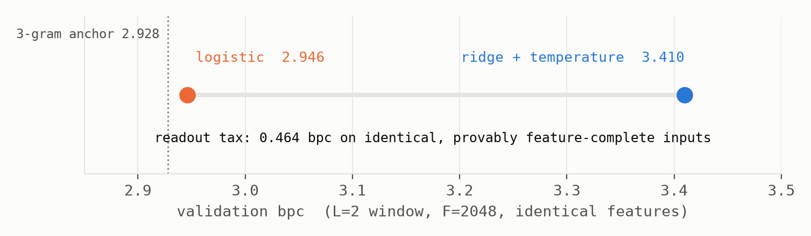
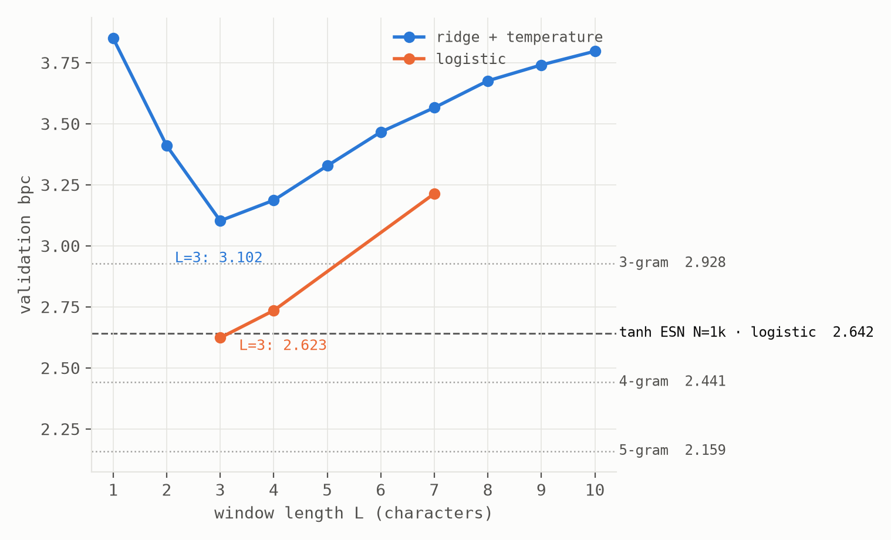

cd ~/experiments/funhouse && less note.txt
Welcome to the Funhouse: Interference Without Dynamics
Random window features as a null model for reservoir language models
Abstract. We evaluate a system with no recurrence and no state, frozen random complex projections ("random optics") of the last L characters read through intensity detectors, as a null model for the reservoir language models of the companion note, on identical text8 splits and identical readout code. Four results. (1) Calibration. At L = 2 the features provably span the 729-context table (rank 729/729, condition number 94), and a logistic readout reproduces the 3-gram baseline to within 0.018 bpc. (2) A readout tax, isolated. On those same feature-complete inputs, ridge regression with temperature calibration costs 0.464 bpc over the logistic readout: a pure readout-calibration penalty, measured for the first time free of any confound with feature quality. (3) A window tax. At fixed feature budget the window-length curve is a V: best at L = 3, monotonically worse to L = 10, and the shape survives the readout change. The companion note's interference cost of held-but-unneeded past reappears in a system with no dynamics: crowding a fixed-dimensional random representation is sufficient; recurrence is not necessary. (4) A weight-class dead heat. Given the 7-character window that provably determines a matched tropical reservoir's state, random features lose to the reservoirs by 0.47 bpc; but at its own best window the null model reaches 2.623 validation bpc, a dead heat with the tuned N = 1000 tanh reservoir (2.642) at matched trained parameters and data, resolved nominally in the window model's favor. At this scale, both machines are effectively three-character models. Predictions were pre-registered; two of four were falsified, one with inverted sign, and we report them as registered.
§1 Setup and baselines
Corpus, splits, metric, and baselines are the companion note's: text8 (V = 27; splits 90M/5M/5M), bits per character on held-out text, add-α n-grams recomputed on the same slices. All runs here use 2×10⁶ training characters unless stated (the n-gram ladder at that budget: 3-gram 2.928, 4-gram 2.441, 5-gram 2.159 validation bpc), are seeded, and record their full configuration in result JSONs.
The model is a feature map with no time in it. The input at position t is the one-hot of the last L characters; the map is a stack of random complex matrices with intensity nonlinearities, the only nonlinearity light gives you:
u_t = onehot(c_{t−L+1} … c_t) ∈ {0,1}^{27L}
z₁ = |M₁ u_t|², z₂ = |M₂ z₁|², … (M_ℓ complex Gaussian, F features per layer)
The first layer is a gather-and-sum (the window is L-sparse); scalings keep unit variance per layer. The trained parameters are a readout on the final features: ridge to one-hot targets with validation-fitted temperature, or multinomial logistic regression: the companion note's readout code, unchanged. F = 1024 gives (F+1)·27 = 27,675 trainable parameters, the same weight class as the companion's N = 1000 reservoirs (27,027).
| model | val bpc | test bpc | trainable params | training |
|---|---|---|---|---|
| uniform | 4.755 | 4.755 | 0 | none |
| 2-gram | 3.447 | 3.449 | ~7×10² | seconds |
| 3-gram | 2.928 | 2.934 | ~2×10⁴ | seconds |
| funhouse L=3, F=1024, ridge | 3.102 | 3.103 | 2.8×10⁴ | seconds |
| tanh ESN N=1k, logistic, tuned ρ | 2.642 | n/a | 2.7×10⁴ | minutes |
| funhouse L=3, F=1024, logistic | 2.623 | 2.624 | 2.8×10⁴ | ~3 min SGD |
| 4-gram | 2.441 | 2.436 | ~5×10⁵ | seconds |
| 5-gram | 2.159 | 2.186 | ~1.4×10⁷ | seconds |
§2 Calibration, and a readout tax isolated
Before any comparison, a gate, pre-registered in the lab journal before the first run. At L = 2 there are only 27² = 729 distinct contexts, and depth-1 intensity features of a 2-slot window contain all pairwise slot interactions, so with F ≫ 729 the features should span every function of the context, in which case a logistic readout can represent the exact 3-gram predictor, and the funhouse must reproduce the 3-gram baseline or the build is wrong.
It does, after one honest wobble: the first attempt missed the registered ±0.05 band by 0.03, the diagnosis rule fired, the feature matrix over the 729 contexts proved full-rank (condition number 94: the mirrors were fine), and gentler optimization landed at 2.946 validation bpc, 0.018 above the measured 3-gram anchor (2.928). The miss was optimizer slack, and is reported as such.
The gate's control arm produced the first finding. On the identical, provably feature-complete inputs, ridge-to-one-hot with temperature calibration scores 3.410: a 0.464-bpc penalty that cannot be blamed on the features, because the features span the target function class (Fig. 1). The companion note measured a 0.36-bpc gap between its ridge and logistic readouts, but there the two effects (readout calibration and feature quality) were inseparable. Here the entire gap is readout. Two corroborating details: the penalty is a property of the function class and not the basis (two different random bases of the same class, F=2048 depth-1 and F=1024 depth-2, give ridge bpc identical to four decimals, as projection theory predicts at negligible regularization); and every ridge number in both labs should be read as carrying a representation-dependent surcharge of this order.

§3 The window tax
The pre-registered expectation for the window sweep was a plateau: bpc improving with L and flattening once the marginal character stops paying, with the best L in {5..9}. The registered form is falsified. At fixed F = 1024 the curve is a V with its minimum at L = 3, deteriorating monotonically through L = 10 (3.102 → 3.797 under ridge); and the V survives the logistic readout (2.623 at L=3 vs. 3.214 at L=7), so it is not a ridge artifact (Fig. 2). A second registered prediction (that a deeper mirror stack helps) was falsified with inverted sign: at L = 7, each additional layer hurts (Table 2).

Read mechanistically, this is the companion note's central phenomenon stripped of its dynamics. There, characters held in superposition in a recurrent state imposed an interference cost on a shared readout, and decodable-but-unneeded memory made the language model worse. Here there is no state, no recurrence, and no memory (only a fixed budget of random features shared across a growing window), and the same signature appears: past that the task barely uses (text8 prediction is dominated by ~3 characters of context) dilutes the representation of the past it needs. The interference cost of held-but-unneeded history is not a property of reservoir dynamics. It is a property of fixed-dimensional shared representations under a single readout, and it prices window width exactly as it prices spectral radius.
| mirror layers | 1 | 2 | 3 |
|---|---|---|---|
| val bpc | 3.401 | 3.566 | 3.703 |
§4 The weight-class comparison
The companion note proved its max-plus reservoir's state is exactly a function of the trailing 7 characters. A 7-character window therefore contains everything that machine knew, and the pre-registered question was whether random projections of that window match it. Three outcomes were registered; the answer was the second: at L = 7, F = 1024, matched ridge readout and data (10⁶ characters), the funhouse scores 3.573 against the tropical reservoir's 3.100 and the tanh's 3.100: the reservoirs beat a random projection of their own window content by 0.47 bpc. Recurrence at this scale is not a window in disguise.
But the flagged post-hoc block reverses the moral. At its own best window the funhouse reaches 2.623 validation bpc under logistic, against the tuned tanh reservoir's 2.642 at matched trained parameters (2.8×10⁴ vs 2.7×10⁴) and matched data. The margin (0.019) is within plausible seed and optimizer noise; we call it a dead heat resolved nominally in the window model's favor, and note that a dead heat is all a null model needs. Reconciliation of the two verdicts: the reservoirs' win at L = 7 does not show them using seven characters; it shows the window-7 projection wasting its feature budget on deep lags. At this width, pond and funhouse alike are effectively three-character models; the companion note's own probes (7.5 characters decodable at its ridge champion, while performance is governed by far fewer) said the same thing from the other side.
One prediction is registered for the sequel before its runs: if the tax is capacity-relative, the optimal window should widen as the feature budget grows: argmin L non-decreasing in F over {1k, 4k, 16k}, at least one strict increase. That is the same law the companion program found for spectral radius under richer readouts, transplanted to a machine with no dynamics at all; a confirmation would make "the interference budget prices the past" substrate-independent in a second direction.
§5 Limitations and related work
Scope: one corpus (text8), character level, F ≤ 2048, 2×10⁶ training characters (10⁶ where matched to the companion's N=1000 runs), seed 0 throughout, single-seed except where the companion supplies seed replications; the logistic optimizer's sensitivity is documented (§2's wobble) and its noise bounds the §4 dead heat. The L=2 logistic reference uses F=2048 depth-1 (its calibration configuration) while the sweep uses F=1024 depth-2; §2's basis-invariance result is why this does not matter for ridge, and the logistic L-comparison is made within the sweep configuration only. The claims are about this task class, these readout families, and these budgets.
Related work. Random-feature models and extreme learning machines are old and well studied (Rahimi & Recht; Huang et al.); optical computing through random scattering media realizes them physically (Saade et al.), which is the architecture's namesake. Next-generation reservoir computing (Gauthier et al.) is the nearest antecedent (features of delayed inputs without recurrence), using polynomial rather than random-intensity features, and motivated as a replacement for reservoirs rather than as a null model. The contribution here is the role and the protocol: a memoryless control run under a pre-registered comparison against reservoirs on identical splits, with the readout tax isolated at provably feature-complete inputs. Path-signature features on the same window are the canonical-feature counterpart (Chevyrev & Kormilitzin) and remain unrun; no claims on that track.
Reproducibility: every run is seeded and its result JSON records the full configuration; the lab journal contains the pre-registration text of every prediction above, in page order, written before the corresponding runs.